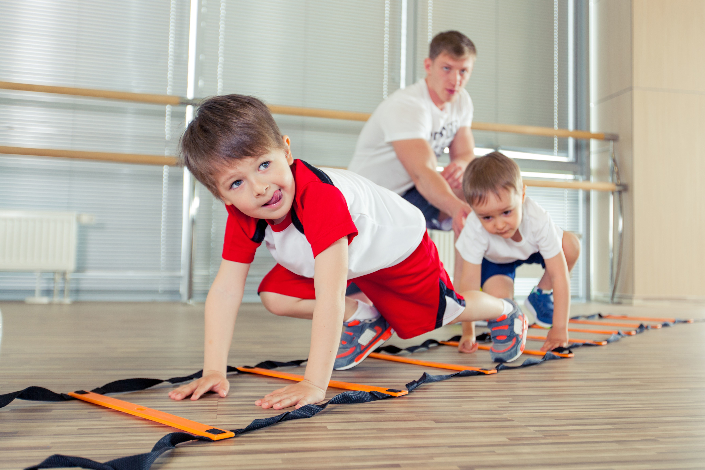

Выбираем детскую спортивную форму
Не важно, занимается ли ваш ребенок в секции или спортивной школе. Поскольку уроки физической культуры еще никто не отменял, то перед первым сентября у вас обязательно появится «головная боль» на тему: как же правильно выбрать удобную спортивную форму для вашего ребенка?
При выборе детских спортивных костюмов первоочередное значение имеет материал, из которых она сделана. Далее приведены основные требования. Во–первых, костюм должен максимально дышащим, что позволит не нарушать теплообмен и избежать излишнего потоотделения. Во–вторых, иметь способность тянуться и восстанавливать форму. Также важно, что спортивная одежда обладала изностойкостью и была легкой.
Сегодня существует большой выбор материалов для пошива спортивного костюма. Наиболее часто используемые ткани — это хлопок, эластан, полиэстер и таслан.
Хлопок прекрасно впитывает влагу, позволяет коже дышать, плюс ко всему он гипоаллергенный и подходит людям с чувствительной кожей. Однако, несмотря на то, что хлопок является натуральной тканью, он не подходит для использования в чистом виде в спортивных вещах, так как очень плохо растягивается.
Тут как раз и приходят на помощь синтетические материалы. Они также, как и натуральный хлопок отлично впитывают воду и пот, позволяют коже дышать, а костюму — растягиваться, и быть более долговечным. Хоть современные технологии и позволяют делать их безопасными для носки, перед покупкой обязательно посмотрите на соотношение материалов на этикетке: синтетики не должно быть больше 50 процентов.
Также при покупке обратите внимание на боковые швы, пошив молний и карманов. Помните, что время, в данной одежде, ребенок будет проводить весьма активно, а значит, она должна быть готова к резким движениям и соответствующим нагрузкам.
Спортивный костюм должен иметь минимальное количество фурнитуры. Да, клепки, стразы и так далее выглядит весьма красиво, но больше проходит для прогулок, чем для активных занятий не подходит. Во–первых, все это может вызывать дискомфорт, во–вторых, велика вероятность, что все эта прелесть довольно быстро придет в негодный вид. Как итог: ребенок расстроиться, а вам придется раскошелиться на еще один костюм.
Не стоит забывать и о практичности: желательно не покупать костюмы светлых оттенков, так как пачкаться она, вне зависимости от того будут ли занятия на улице или в помещении, будет с космической скоростью.
Наиболее оптимальный вариант: темный низ, и яркий верх. Кстати, научно доказано, что красные, оранжевый, желтый цвет и их оттенки повышают активность, работоспособность и настроение. В общем, то, что нужно на уроке физической культуры!